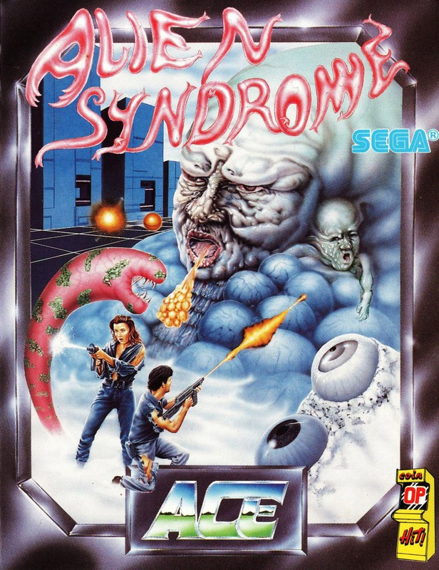
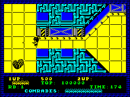
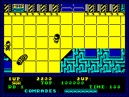

Alien Syndrome


{kind=link}

| Publisher: | ACE |
| Price: | £8.99 Cass, 14.99 Disk |
| Year: | 1988 |
| Source: | CRASH, Issue 57 |

Brave (and very modest) hero that you are, you have been sent to rescue ten comrades being held in a genetics lab by nasty organic mutations (who, I must admit, look remarkably like our beloved Ed after a heavy evening getting as newt-happy).
Licensed from the Sega original, Alien Syndrome is an ichor- (alien for blood) spattered romp through a Gauntlet style ‘shoot first and ask questions later’ game, brought to you by Softek International’s new software label, Ace. And it is a surprisingly attractive conversion of the popular coin-op, which more than lives up to expectations.
You can choose to play Ricky or Mary, two veteran alien busters with a loathing for anything slimy. So alone, or with a friend’s help, you set about pulverising the bug-eyed hordes.

The time bomb set, your search begins. Your basic shot blaster is fairly effective, but doesn’t quite have the spatter effect required. Searching the complex reveals weapons bays, and touching them arms you with weapons to make Rambo proud. There are lasers, bombs, flame-throwers, fire balls, and a handy little device called an option.
Option is a small robot who follows you around and protects your rump — though care must be taken when in two-player mode because both players can kill each other, and the most annoying thing is to follow a player with an option blasting away at all and sundry.
Graphically Alien Syndrome is effective, with the daring duo (this game is best played with a friend, although my ‘friend’ Phil King kept shooting my character when I played doubles with him) rampaging around, trying to stop the ghastly (and I do mean that in the nicest sense) aliens from practising some (usually all) of their antisocial activities.
One thing that does put me off play a little is the slightly jerky screen scrolling, but once into the game, too much is happening to worry about this.

Once all ten hostages are freed (usually with much reference to the radar maps found scattered around the complex), you must make a beeline for the exit. You’re only given a short time to achieve this goal, so speed is of the essence.
Here you are faced with a large monster to be destroyed within a time limit, and as the weapon used to free your comrades is transferred to this screen, it’s best to collect the most powerful one available.
Once this is completed it’s onto the next meanie-filled screen to blast the heck out of those vile green refugees from a science fiction movie. Alien Syndrome is a very playable addition to the ageing ‘if it moves, blast it’ game. Nothing new, but what the hell, I like it.
MARK ... 90%
DAMN AND BLAST IT!
- The best weapon for destroying aliens while you collect scientists, is the flame-thrower, but once you have collected them all, change to the laser for the mutant.
- Don’t go mad! Just take it easy and don’t rush around — you’ll probably run straight into an alien.
- Don’t bother with the maps as they waste time. Just follow the wall around and remember that the exit is at the top.
- When on the screen with the mutant, don’t bother with the fire he throws out — just keep moving and it will eventually disappear.
- Once you’ve got the mutant down to just his head, shoot at it when it’s still and move up or down as soon as it comes towards you.
- When fighting the second large alien, keep moving to avoid its bombs.
Alien Syndrome has lost much colour in its conversion to the Spectrum, it loses nothing in gameplay. The graphics are cute and quite varied. The massive alien at the end of each level is well-drawn and its animation is surprisingly smooth as it spews forth red gunge at you (which Nick mistook for Cherry Coke...). Unfortunately 128K owners get no extra music because 48K BASIC must be selected to load the program. Nevertheless, the existing sound FX are atmospheric enough without the need for snazzy title tunes. What really makes Alien Syndrome so playable is its concept. Shooting squirming aliens is satisfying, and the half-screen scrolling makes progress more difficult than on the coin-op, as you never know what lurks ahead. Whereas the one-player game involves frantic blasting, with two players more care must be taken to avoid shooting your colleague (clumsy Caswell should watch where he’s firing his bullets!).
PHIL ... 90%
Not having played the arcade machine, I can’t comment on how faithful the Spectrum conversion is, but it’s a great shoot-’em-up nevertheless. The graphics are simple but clear with the best being on the grotesque mutants between levels. Having male and female characters may stop sexist remarks, and as they both have equal abilities it doesn’t really make much difference which you choose. The game gets really going once past the first level, the aliens all change and the gameplay gets faster. You’ll need to be quick with your fire button to survive Alien Syndrome, but it’s well worth the sore fingers!
NICK ... 90%
THE ESSENTIALS
| Joystick: | Kempston, Sinclair, Cursor |
| Graphics: | Mostly monochromatic sprites, apart from the grotesque large aliens |
| Sound: | Limited to simple blasting effects |
| Options: | Simultaneous two-player option |
| General rating: | All the gory gameplay from the coin-op has been maintained in this addictive conversion |
| Presentation: | 87% |
| Graphics: | 85% |
| Playability: | 86% |
| Addictive qualities: | 88% |
| Overall: | 90% |